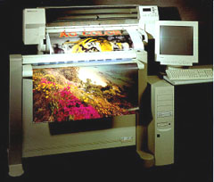
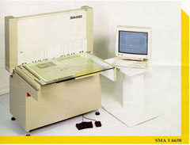
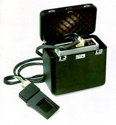

Progetto Imago II
|
Responsabile fino al 2019: Paolo Buonora Il Progetto Imago II, realizzato nel 1997-2000, ha
avuto per obiettivo il passaggio dalle tecniche tradizionali di riproduzione
a quelle digitali, finalizzate a preservare gli originali. Molte delle
serie più consultate sono ora disponibili in consultazione virtuale,
sia presso L'Archivio di Stato, sia su Internet dal maggio 2002. La microfilmatura e la fotografia tradizionali (chimiche) sono state impiegate per decenni nella riproduzione di sicurezza dei documenti storici conservati negli archivi, sia per fornire copie all’utenza, sia per offrire una consultazione sostitutiva che evitasse il logoramento dei pezzi originali, sia nel caso di smarrimenti e furti. Per quanto il progetto godesse di uno stanziamento considerevole effettuato nel 1992-1993 (£. 1.500.000.000 di budjet), in realtà si è entrati nella sua fase operativa solo nell’autunno 1996: l’urgenza della spesa e la scarsità di significative esperienze in materia hanno indotto l'Amministrazione archivistica a lasciare libero ciascun Istituto di ridisegnare un proprio progetto e realizzarlo. A differenza di altri istituti archivistici (Torino, Perugia) i quali hanno commissionato uno studio di fattibilità all’Università di Genova, al CNR (Firenze) o di altri (Cagliari) che si sono rivolti direttamente a ditte private, l’Archivio di Stato di Roma ha affidato la progettazione a un proprio funzionario, cercando di mettere a frutto le esperienze di riproduzione digitale già in corso presso il proprio Servizio di fotoriproduzione. Gli elementi "strategici" del progetto dell’Archivio di Stato di Roma sono stati i seguenti: realizzare il passaggio alle tecnologie digitali solo se realmente più efficienti e convenienti di quelle tradizionali; utilizzare scanner per grandi formati ad altissima risoluzione accanto a dorsi digitali; privilegiare l’investimento sui dispositivi di acquisizione e gestione dell’immagine, nonché sul lavoro umano, riducendo al minimo l’investimento in sistemi e servizi di informatizzazione; ottenere un sistema gestibile col personale dell’istituto e coi fondi del bilancio ordinario, una volta finito lo stanziamento straordinario. In particolare, sono stati utilizzati per l’acquisizione delle immagini uno scanner Colortrac nella versione A0 colore per la cartografia e le pergamene; uno scanner/planetario digitale SMA in toni di grigio e formato A1 per i registri; un dorso digitale a scansione Dicomed Pro su banco ottico Sinar per mappe di grande formato, e in seguito e su Mamya 6*6 per volumi miniati e preziosi. Lo scanner Colortrac non era mai stato utilizzato su materiale antico, e il planetario digitale SMA utilizzato è il primo importato in Italia. La risoluzione scelta è stata di 300 dpi per tutte le scansioni a colori (mappe e pergamene); 200 dpi per i registri manoscritti; quasi 200 dpi (con poche eccezioni) per le foto digitali. Sull’immagine non è stata utilizzata interpolazione, ma sono stati applicati alcuni filtri; alla fine veniva utilizzata una compressione JPEG di livello variabile a seconda della qualità richiesta, e una serie di immagini veniva masterizzata su due copie di CD-R, una per la consultazione su jukebox e l’altra conservata per fini di sicurezza. A parte le risorse interne già ricordate ci si è avvalsi della collaborazione del Caspur di Roma per alcune parti della progettazione, per l’allestimento della rete e lo sviluppo di software applicativo; tutto il lavoro di acquisizione dati e immagini è stato effettuato dalla BES, società cooperativa di produzione e servizi per i Beni Culturali, sotto la direzione del funzionario dell’Istituto responsabile del progetto. Gli obiettivi raggiunti sono stati la riproduzione digitale e la gestione tramite basi di dati e applicativi con procedure di information retrival di molte fra le serie più consultate e preziose: il Catasto Alessandrino del ‘600 (400 piante disegnate per la gestione finanziaria della manutenzione alle strade consolari), il Catasto Urbano di Roma (90 piante, i relativi brogliardi e 150 piante di aggiornamenti successivi), una selezione dei 600 maggiori centri urbani del Catasto Gregoriano (riproduzione parziale delle mappe di grande formato e integrale dei registri relativi), l’intera cartografia del Cessato catasto rustico versato dall’UTE (10.000 fogli di mappa). Sono state inoltre riprodotte le pergamene romane (2.500), schedate assieme a tutte le altre pergamene dei vari fondi in una base di dati comune (12.000 pezzi), comprendente degli eventuali regesti; le rubriche dei notai romani (260 registri, per complessive 55.000 scansioni); infine, alcuni pezzi della collezione dei preziosi come il bellissimo Liber Regulae. |
Bibliografia

 
|